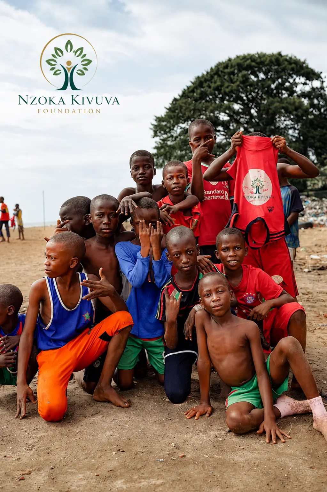
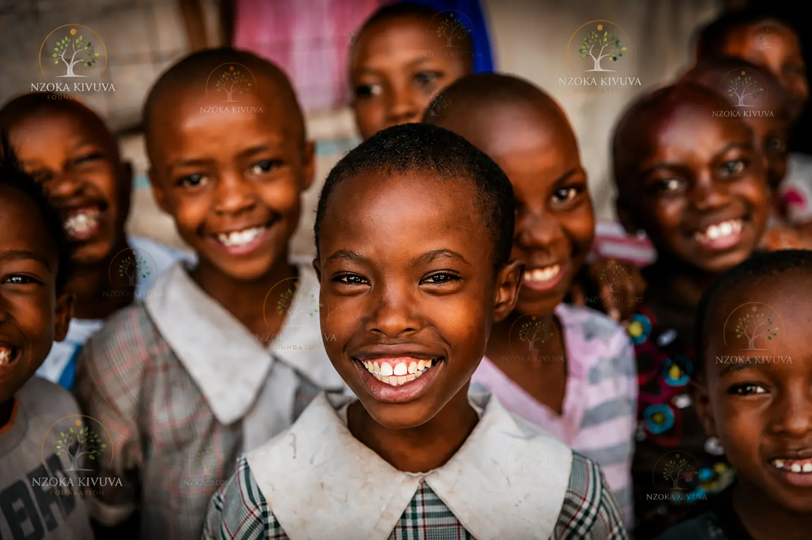
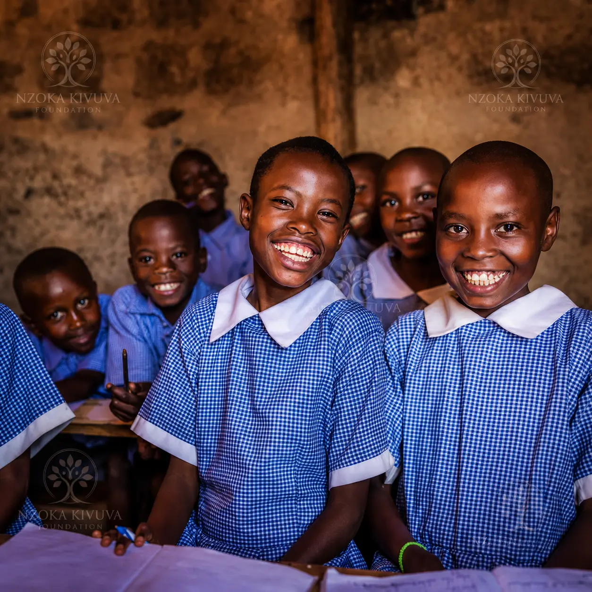

In the rolling hills of Machakos County, extraordinary talent lies hidden — young athletes with the potential to compete at the highest levels, but who lack the exposure, training, and mentorship needed to succeed.
The Nzoka Kivuva Foundation is changing that. Through our grassroots scouting and mentorship programs, we're identifying talented young people across Machakos and providing them with the training, mentorship, and opportunities they need to excel in sports — and in life.
"I never thought I could be a professional athlete. The foundation gave me a chance to showcase my talent, and now I'm being scouted by national teams. This is just the beginning."

The Hidden Potential: Why Grassroots Talent Goes Unnoticed
In rural Kenya, exceptional sporting talent often goes unnoticed due to a lack of scouts, limited infrastructure, and minimal exposure. Young athletes train on uneven fields, with limited equipment, and without the guidance of qualified coaches.
Yet, despite these challenges, Machakos County is home to some of the most promising young athletes in Eastern Kenya — from footballers and runners to volleyball players and athletes. The Nzoka Kivuva Foundation is committed to ensuring that no talent goes undiscovered.
"Through our talent identification programs, we have scouted 500+ young athletes across 8 sub-counties in Machakos. Our tournaments and mentorship camps have provided a platform for 40+ talented individuals to receive advanced training and exposure to professional opportunities."
Beyond the Game: Our Talent Development Model
The foundation's approach to talent development goes beyond just identifying talent. We provide a comprehensive support system for young athletes:
- Scouting Tournaments – Regular tournaments to identify emerging talent
- Mentorship Camps – Professional coaching and life skills training
- Education Support – Linking talent with academic scholarships
- Pathway Programs – Connecting athletes to professional clubs and academies
- Character Development – Discipline, teamwork, and ethical leadership
"We believe that talent alone is not enough," said Advocate Nzoka Kivuva, Executive Director. "Young athletes need mentorship, guidance, and a supportive environment to reach their full potential. Our programs are designed to provide exactly that."
Real Stories, Real Impact
Case Study: Shadrack's Journey
Shadrack Kasyoka, a 17-year-old from Mwala, had always dreamed of becoming a professional footballer. But growing up in a rural community, he had limited opportunities to develop his talent or gain exposure.
"I never thought I could be a professional athlete. The foundation gave me a chance to showcase my talent, and now I'm being scouted by national teams. This is just the beginning."
Today, Shadrack has been identified by a national talent scout and is receiving advanced training through the foundation's mentorship program. He's also pursuing his education through a sports-linked scholarship.
The Role of Mentorship
At the heart of our talent development program is mentorship. We pair young athletes with experienced coaches and former athletes who provide guidance, motivation, and a model of success.
- Role Models – Athletes who have succeeded against the odds
- Life Skills – Decision-making, leadership, and resilience
- Career Guidance – Pathways to professional opportunities
- Personal Growth – Confidence and self-belief
"Mentorship is what transforms talent into success," said the foundation's program coordinator. "When young athletes see someone who looks like them and has succeeded, they begin to believe that they can too."
What's Next
Building on the success of our talent development programs, the foundation plans to:
- Expand scouting to all 18 sub-counties in Machakos
- Establish a dedicated talent academy
- Partner with professional clubs for pathway programs
- Create a mentoring network of successful athletes
"We're building a pipeline of talent that will put Machakos on the map," said the foundation's program manager. "Our goal is to see athletes from this region competing at the highest levels — and giving back to their communities."


How You Can Help
Every talented young athlete deserves the opportunity to succeed. Your support can help us reach more young people like Shadrack and create pathways to success in Machakos.
- KSh 1,000 – Provides sports equipment for a talent camp
- KSh 2,500 – Funds a scouting tournament
- KSh 5,000 – Sponsors a young athlete's mentorship program
- KSh 10,000 – Supports a full talent development cycle
Help Us Discover and Nurture Talent
KSh 1,000 provides sports equipment for a talent camp. Join us in identifying and mentoring the next generation of athletes from Machakos County.